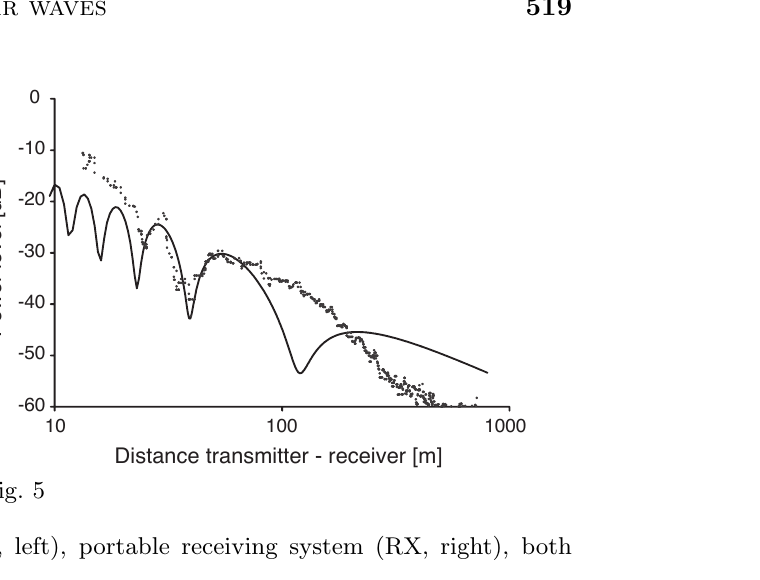

Lab note · 2026-09-04 · Hively EED
Why this bench is adequate for SLW and not for SW
Scope: Hively EED split between scalar-longitudinal wave (SLW) and scalar wave (SW). This page does not claim SW has been detected here. Simulator pages stay separate.
The distinction that matters
Hively’s EED promotes the Lorenz leftover to a physical field
C ≡ ∇·A + (1/c²) ∂Φ/∂t
| SLW | SW | |
|---|---|---|
| Fields | B=0, C≠0, longitudinal E∥∇C | B=0, E=0, C≠0 |
| Energy | ∼ε E²/2 + C²/2μ | ∼ C²/2μ |
| Momentum | ∼ −C E/μ | none (pressure only) |
| Source | irrotational / gradient-driven current J=∇κ | charge-fluctuation mismatch on short timescales |
| Ohmic / Joule loss in a conductor | J=σE is available | no E → no σ E² Joule term |
Both are claimed to avoid the classical skin effect (no circulating B, so no Faraday eddy currents). Only the SLW still has a longitudinal E that can drive conduction current in seawater or steel. Long-range hull-transparent signalling is a stronger theoretical SW candidate than SLW — the two must not be treated as the same measurement.
Joule loss: implication for SLW vs SW
In a linear conductor the local ohmic (Joule) power density is
pJoule = J·E = σ E²
- SLW: nonzero EL ⇒ expect ohmic attenuation in seawater or steel even if the classical eddy-current skin effect is suppressed (no circulating B).
- SW: E=0 ⇒ no σ E² term ⇒ a theoretical hull / seawater transparency advantage relative to SLW.
The table row Ohmic / Joule loss in a conductor already encodes that split. Cage and seawater runs on this bench therefore stress-test SLW claims; they do not by themselves demonstrate SW transparency.

What this bench actually measures
The working apparatus is an SLW-class launcher/receiver:
- balun monopole (1296 MHz build: close-fitting sleeve / bazooka; patent Fig. 2A skirt is historical) and/or bifilar pancake
- TinySA / conventional RF chain
- Faraday-cage and seawater-cell attenuation runs
- PMT / optical side channel as a downstream effect sensor, not a first-principles C meter
Those antennas couple to the pair (C, EL). They can support SLW-class statements about gradient-driven channels, Faraday penetration vs TEM skin estimates, and seawater loss on a channel that still has EL. They cannot support “the surviving tone is a pure SW.” Cage penetration and PMT response are not SW proof.
Why the same bench is not an SW detector
- No E-null at the receiver. Bifilar or balun monopole still responds to residual longitudinal E.
- No independent field inventory. SW needs three simultaneous channels: loop → B; short dipole / E-probe → EL; bifilar / second balun monopole → C + residual EL. SW is only when the first two die in a conductor and the third remains. This bench does not log that triad.
- No field-free potential sensor (Josephson/SQUID or Puthoff-class A–Φ architecture) in the current RF chain. Naming an architecture is not evidence a test was run.
- No isolated information channel. Public EED work shows CW/swept tones through cages, not a modulated payload that exists only in C. Zimmerman plasma-tube work is a different ontology. Meyl kits are not used as evidence here.
Puthoff potential communication (NASA/CR-2005-213749 §3.4.2.2)
The MSE Technology Applications survey for NASA Langley, Advanced Energetics for Aeronautical Applications: Volume II (NASA/CR-2005-213749, Alexander, April 2005), §3.4.2.2, summarizes Harold E. Puthoff’s U.S. Patent US 5,845,220, titled Communication Method and Apparatus with Signals Comprising Scalar and Vector Potentials without Electromagnetic Fields.
- Transmit framing (as reported): a time-varying signal of scalar and vector potentials without accompanying electromagnetic fields.
- Receive framing (as reported): an electromagnetically shielded, cryogenic Josephson Junction converts the penetrating scalar/vector potentials into conventional EM that an ordinary radio can detect.
- MSE reportage of Puthoff’s answers: only potential is transmitted and received; no energy is transferred as shielded E/B; and the system was built and tested “as part of a classified project” (quoted here only as NASA contractor survey reportage).
Mapping to this page: the patent’s “potentials without EM fields” framing sits closer to Hively’s SW (E=B=0, C≠0) than to SLW (which keeps EL and therefore the σ E² Joule term). That is an ontology map, not a replication claim.
Local copy: NASA/CR-2005-213749 PDF · catalogued on Library.
What “fine for SLW” means
- launcher family: gradient-driven, B suppressed
- cage and seawater cells: right stress tests for no-classical-skin-effect claims
- PMT / decay-rate side channels: optional SLW effects, not SW proof
- label results SLW (or “SLW-like, EL not excluded”)
SLW still has EL, so σ E² loss in seawater is expected even if eddy-current skin effect is not.
What would have to be added for an SW claim
- Launch with the existing gradient-driven source.
- Receive on the three-channel set (loop / E-probe / bifilar).
- Insert conductivity (seawater cell, then steel plate/can).
- Require: loop and E-probe die; bifilar tone remains; TEM leakage paths closed.
- AM or slow FSK on the drive; recover the same spectrum on the surviving channel.
Repo stance: SLW-class hardware; SW requires E=B=0 isolation, a three-channel (B / EL / C) conductor test, and a modulated payload on the surviving C channel.
Source: SW-vs-SLW-detection-gap.md (2026-09-04); Puthoff mapping from NASA/CR-2005-213749 §3.4.2.2; range figure from Monstein & Wesley 2002 Fig. 5. Learn · Lab · Setup · Library · Monstein.